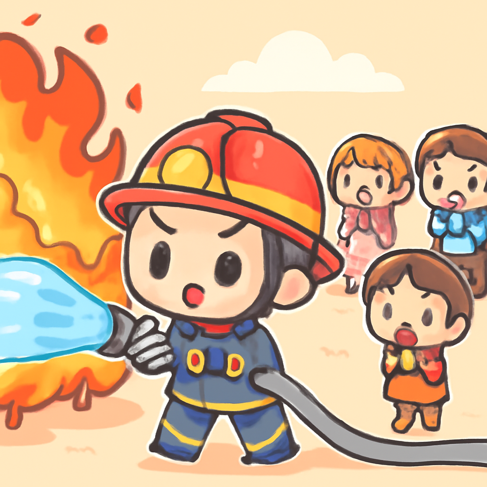
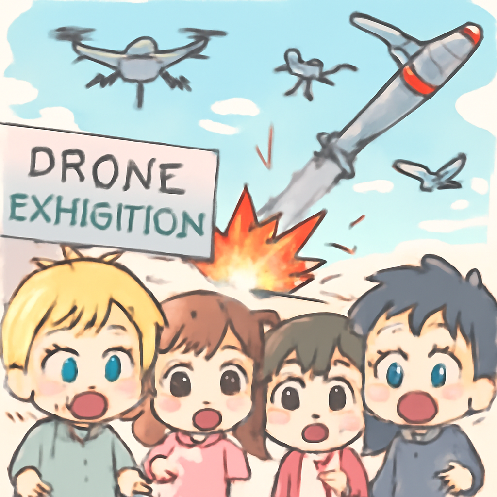

其一 · 西班牙馬德里 · 野火威脅居民
西班牙和法國多地因野火撤離上萬人

在西班牙馬德里，野火被形容為當地歷史上最嚴重的火災，數萬人遭到撤離。法國的消防隊也在奮戰，因為火勢正朝著波爾多方向蔓延。這場災害不僅影響居民生活，還可能對當地經濟造成重大打擊，尤其是在旅遊旺季。希望這火勢別像夏天的黴菌一樣蔓延！
🔗 原始新聞 ↗
2026-07-25 · 以古觀今，以笑抗愁
西班牙和法國多地因野火撤離上萬人

在西班牙馬德里，野火被形容為當地歷史上最嚴重的火災，數萬人遭到撤離。法國的消防隊也在奮戰，因為火勢正朝著波爾多方向蔓延。這場災害不僅影響居民生活，還可能對當地經濟造成重大打擊，尤其是在旅遊旺季。希望這火勢別像夏天的黴菌一樣蔓延！
🔗 原始新聞 ↗
烏克蘭基輔的無人機展發生致命襲擊

在基輔，一場無人機展正熱鬧進行中，卻不幸遭到俄方飛彈襲擊，造成十人喪生。這次襲擊突顯了戰爭的殘酷，亦讓人對烏克蘭的防務產業產生更深的擔憂。看來即便是展示科技的場合，也無法逃脫戰爭的陰影。希望未來無人機能夠用於更和平的用途，而不是成為武器。
🔗 原始新聞 ↗
美國與伊朗在海灣地區持續交火
美國與伊朗在海灣地區的緊張局勢再度升級，雙方互相發動攻擊。這次衝突源於美國計劃使用凍結的伊朗資產來賠償戰爭損失，引發伊朗的強烈譴責。地區局勢愈發不穩，讓人擔心會不會成為更大規模衝突的前奏。希望未來能有更多的對話，而不是火藥味。
🔗 原始新聞 ↗
尼日利亞總統批准大規模軍事擴張
面對不斷困擾民眾的武裝團體，尼日利亞總統最近批准了歷來最大規模的軍事擴張計畫。這項計畫旨在加強國家的安全力量，以對抗各種武裝威脅。能否成功還有待觀察，但這至少顯示出政府對保護民眾的重視。希望這些努力能讓國家重回和平，畢竟人人都想要安穩的生活。
🔗 原始新聞 ↗
孟加拉國總統因政局不穩辭職
孟加拉國總統沙哈布丁最近辭職，這一決定引發了對政治未來的廣泛猜測，尤其是前總理哈西娜的潛在回歸。這樣的政治變局讓國家未來充滿不確定性，民眾對於新領導的期待和擔憂同時存在。希望新局面能帶來更好的改變，而不是「再來一場政治劇」！
🔗 原始新聞 ↗